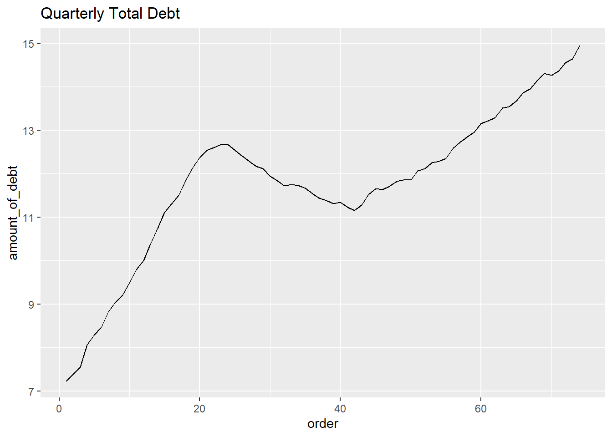

Code
library(tidyverse)
library(readxl)
knitr::opts_chunk$set(echo = TRUE, warning=FALSE, message=FALSE)library(tidyverse)
library(readxl)
knitr::opts_chunk$set(echo = TRUE, warning=FALSE, message=FALSE)I read data set about debt in trillions to show how much debt people have.
debt <- read_xlsx("_data/debt_in_trillions.xlsx")
debt# A tibble: 74 × 8
`Year and Quarter` Mortgage HE Revolvin…¹ Auto …² Credi…³ Stude…⁴ Other Total
<chr> <dbl> <dbl> <dbl> <dbl> <dbl> <dbl> <dbl>
1 03:Q1 4.94 0.242 0.641 0.688 0.241 0.478 7.23
2 03:Q2 5.08 0.26 0.622 0.693 0.243 0.486 7.38
3 03:Q3 5.18 0.269 0.684 0.693 0.249 0.477 7.56
4 03:Q4 5.66 0.302 0.704 0.698 0.253 0.449 8.07
5 04:Q1 5.84 0.328 0.72 0.695 0.260 0.446 8.29
6 04:Q2 5.97 0.367 0.743 0.697 0.263 0.423 8.46
7 04:Q3 6.21 0.426 0.751 0.706 0.33 0.41 8.83
8 04:Q4 6.36 0.468 0.728 0.717 0.346 0.423 9.04
9 05:Q1 6.51 0.502 0.725 0.71 0.364 0.394 9.21
10 05:Q2 6.70 0.528 0.774 0.717 0.374 0.402 9.49
# … with 64 more rows, and abbreviated variable names ¹`HE Revolving`,
# ²`Auto Loan`, ³`Credit Card`, ⁴`Student Loan`
# ℹ Use `print(n = ...)` to see more rowsThis data set shows amount of debt people have from 2003 by the type of debt in trillions. It has 74 rows and 8 columns. The types of debts are 6 and end of the column. It shows total amount of debt.
Firstly, I changed column names and added column ‘order’ to make time series line graph.(original year variables are characteristic variables so R told me that it cannot be made into graph. Maybe there are other better way to do this, but now I don’t know about it. I’ll try to find out.)
colnames(debt) = c("year_and_quarter", "mortgage","HE_revolving", "auto_loan","credit_card","student_loan","other","total")
debt<-mutate(debt, 'order'=1:74)
colnames(debt)[1] "year_and_quarter" "mortgage" "HE_revolving" "auto_loan"
[5] "credit_card" "student_loan" "other" "total"
[9] "order" It has many columns so cannot easily recognized. So I pivoted it.
pivot_debt<-pivot_longer(debt,col=c(mortgage, HE_revolving, auto_loan, credit_card,student_loan,other, total), names_to="types", values_to="amount_of_debt")
pivot_debt# A tibble: 518 × 4
year_and_quarter order types amount_of_debt
<chr> <int> <chr> <dbl>
1 03:Q1 1 mortgage 4.94
2 03:Q1 1 HE_revolving 0.242
3 03:Q1 1 auto_loan 0.641
4 03:Q1 1 credit_card 0.688
5 03:Q1 1 student_loan 0.241
6 03:Q1 1 other 0.478
7 03:Q1 1 total 7.23
8 03:Q2 2 mortgage 5.08
9 03:Q2 2 HE_revolving 0.26
10 03:Q2 2 auto_loan 0.622
# … with 508 more rows
# ℹ Use `print(n = ...)` to see more rowsNow, I can see it at one glance. Its column reduced 8 to 3 and row increased 74 to 518.
I made a time series line graph of total debt by quarter.
debt_tot<-filter(pivot_debt, types=="total")
debt_tot# A tibble: 74 × 4
year_and_quarter order types amount_of_debt
<chr> <int> <chr> <dbl>
1 03:Q1 1 total 7.23
2 03:Q2 2 total 7.38
3 03:Q3 3 total 7.56
4 03:Q4 4 total 8.07
5 04:Q1 5 total 8.29
6 04:Q2 6 total 8.46
7 04:Q3 7 total 8.83
8 04:Q4 8 total 9.04
9 05:Q1 9 total 9.21
10 05:Q2 10 total 9.49
# … with 64 more rows
# ℹ Use `print(n = ...)` to see more rowsggplot(debt_tot, aes(x=order, y=amount_of_debt)) +
geom_line() +
ggtitle("Quarterly Total Debt")
In the same way, I can draw a time series graph according to the type of debt.
debt_mort<-filter(pivot_debt, types=="mortgage")
ggplot(debt_mort, aes(x=order, y=amount_of_debt)) +
geom_line()+
ggtitle("Quarterly Mortgage Debt")
Using this data, changes in debt related to the financial crisis in the late 2000s can be reviewed by type. We can find out what type of debt was sensitive to the financial crisis. In addition, research problems such as identifying which of the various debt types is most closely linked to the total debt can be established.